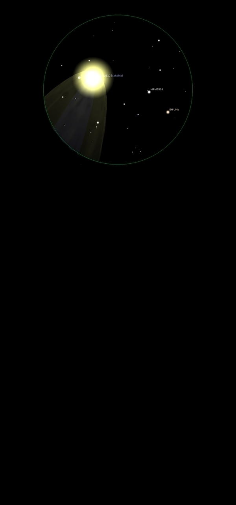

Comet
Catalina
C/2013 US10 Catalina
Mag 5 ish at brightest
Discovered by the Catalina Sky Survey on 31/10/13
15/01/16
No notes made on the night, just a sketch of this Mag 6 ish
fuzzy ball, no sign of any tail
Here is the sketch made at
the eyepiece just after midnight
with opposite the occular view within Stellarium for the same
time, using the Solar System Plug-in for Stellarium to download
object lists from the Minor Planet Center's website
28/01/16
Frustrating start as the clouds kept closing in and not quite
sure where to look, sky cleared but no luck, came in and loaded
comet data into Stellarium only to go back out and find sky
clouded over!
Persevered and at about 7:50pm there it was
Very close to a star of Mag 9.10 which actually appeared to be
within it!
A bright, tight ball with quite a large diffuse halo and a hint
of a tail
In the same 12mm FOV as HIP 52464 at Mag 6.7 and HIP 51883 at
Mag 6.45
In for dinner, came back out to find a clear sky and Comet
Catalina now midway between the Mag 9.10 star and HIP 52464
Fantastic to see obvious movement in the two hours or so of
observing
30/01/16
It has moved northwards since I last observed it two days ago
and, I think, got fainter although there does appear to be a
hint of a tail below it
Quite easy to locate , but not visible in the finderscope, close
to HIP 41793 which at Mag 4.25 is the brightest of a bucket
shaped asterism of stars getting dimmer from top right
clockwise, with HIP 51502 at Mag 5.25, HIP 51384 at Mag 5.50 and
HIP 45421 at Mag 6.25
HIP 47193 is just in the same 25mm FOV as Catalina and just out
of it in 12mm
I was interested to see how Catalina compared in brightness to
M81, Bodes Nebula, which has a magnitude of 6.90,
M81 was defiantly brighter, not by much but noticeable,
otherwise they were surprisingly similar in size and shape
02/02/16
Still climbing, now well past Polaris and heading into a rather
sparse area of the sky
Telescope axis offset from north to enable easier
observations but still a bit of a stretch as the telescope
turns!
The FOV does not move very much compared to observing objects
away from the pole
Used M81 as a comparison of magnitude yet again, M81 is
defiantly brighter, although not by much, in 12mm both appear
similar in appearance
10/02/16
Faint when located using 12mm, now in Camelopardalis
Best view however using 18mm where it is framed by stars of 8th
and 9th magnitude
Catalina itself much dimmer than when last observed, like a Mag
8 Galaxy but in 18mm what appears with inverted vision to be
quite a long tail
{kind=link}